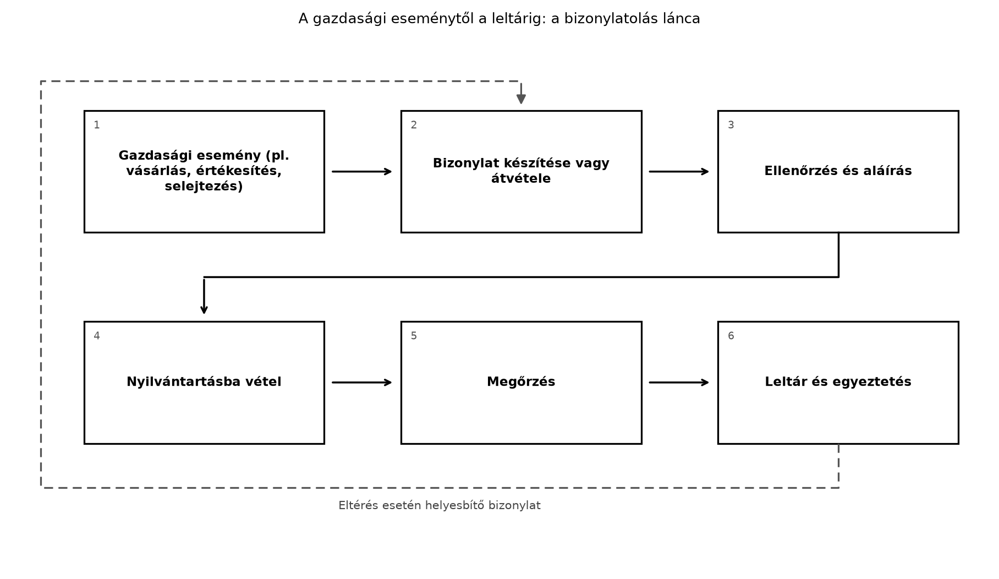

Vasárnap este kilenc óra van a cukrászdában. A hűtőben még tizenkét doboz sütemény várja a hétfő reggeli szállítást, a pultban készpénz van, a beszállító reggel lisztet hozott, és a vendégek közül ketten is számlát kértek. A tulajdonos azt mondja: „Minden papírt tegyél rendbe, mielőtt elmész!” Ilyenkor kell tudnod, hogy a számla, a nyugta, a szállítólevél és a leltárív nem egyszerű papírmunka: ezek bizonyítják a vállalkozás jogszerű működését, a készletgazdálkodást és a vendégek felé való elszámolást. Ha egy bizonylat hiányzik vagy rosszul van kitöltve, a hatósági ellenőrzés bírságot hozhat, a leltárhiány pedig pénzben kifejezhető veszteséget jelent.
A bizonylatolás úgy működik, mint egy lánc: minden gazdasági eseménynek írásos nyoma kell, hogy legyen. A cukrászdában a lánc a beszerzéstől az értékesítésig és a leltárig tart.

Definíció. Az ügyvitel a vállalkozás gazdasági eseményeivel kapcsolatos iratok kiállításának, átvételének, ellenőrzésének, nyilvántartásának és megőrzésének rendje. A cukrászdában az ügyvitel a termelés és az értékesítés mindennapos papír- és elektronikus alapú nyilvántartása.
Definíció. A gazdasági esemény minden olyan történés, amely a vállalkozás vagyonát, eredményét vagy tartozásait megváltoztatja: anyagbeszerzés, értékesítés, készpénz befizetés, banki átutalás, selejtezés, leltározás.
Definíció. A bizonylat olyan irat, amely gazdasági eseményt igazol, vagy valamely nyilvántartás alapjául szolgál. A bizonylat lehet külső (a partner állítja ki) vagy belső (a vállalkozás maga készíti).
Szabály. Minden gazdasági eseményről bizonylatot kell kiállítani vagy átvenni. A bizonylatnak a valóságnak megfelelőnek, teljesnek, olvashatónak és aláírttal ellátottnak kell lennie. A számviteli törvény szerint a bizonylatok megőrzési ideje általában nyolc év (ellenőrizendő: hatályos számviteli törvény és adózási szabályok). A bizonylatot a megőrzési idő alatt nem lehet megsemmisíteni, még akkor sem, ha a vállalkozás megszűnik.
Definíció. A szigorú számadású bizonylat olyan, sorszám szerint nyilvántartott nyomtatvány, amelyet külön szabályok szerint kell kezelni. Ilyen a számla, a nyugta, a készpénzfizetési bizonylat. A sorszámoknak folyamatosnak kell lenniük. A rontott példányt nem szabad kidobni: át kell húzni, rá kell írni, hogy „rontott”, és az összes példányát meg kell őrizni.
Szabály. A szigorú számadású bizonylat elvesztése, megsemmisülése esetén a vállalkozásnak jegyzőkönyvet kell felvennie, és a hatóság felé bejelentési kötelezettsége keletkezhet (ellenőrizendő: adóigazgatási eljárási szabályok). A gyakorlatban a számlázó programok elektronikus sorszámmal dolgoznak, de a szabály akkor is érvényes.
Definíció. A számla az általános forgalmi adóról szóló törvény szerinti bizonylat, amelyet az eladó állít ki a vevő részére a termék értékesítéséről vagy szolgáltatás nyújtásáról. A számla lehet papíralapú vagy elektronikus.
A számlának legalább az alábbi adatokat kell tartalmaznia (ellenőrizendő: hatályos ÁFA törvény szerinti adattartalom):
Példa. A cukrászda számlát állít ki 10 db Dobos torta értékesítéséről, egységár 4 500 Ft, ÁFA 27% (tanulási példa; ellenőrizendő: aktuális ÁFA-mérték). A számla tételei:
| Tétel | Mennyiség | Egységár (Ft) | Nettó (Ft) | ÁFA (27%) | Bruttó (Ft) |
|---|---|---|---|---|---|
| Dobos torta | 10 db | 4 500 | 45 000 | 12 150 | 57 150 |
| Összesen | — | — | 45 000 | 12 150 | 57 150 |
Számítás. A bruttó összeg kiszámítása:
Technológiai (ügyviteli) lap.
Definíció. A nyugta a készpénzes értékesítést igazoló bizonylat, amelyet az online pénztárgép az eladáskor kiállít. A nyugta adattartalmát az online pénztárgép szoftvere határozza meg (ellenőrizendő: NAV online pénztárgéppel kapcsolatos előírások). A nyugtát a vevőnek át kell adni, kérésre számlát is ki kell állítani.
Definíció. Az átutalási számla (fizetési megbízás) a banki fizetésre szolgáló bizonylat. A vállalkozás a beszállítónak átutalással fizethet; az átutalási számla tartalmazza a kedvezményezett nevét, számlaszámát, az összeget és a közleményt. A cukrászdában ezt leggyakrabban elektronikus banki felületen állítják ki, de papíralapú is létezik.
Definíció. A felvásárlási jegy olyan bizonylat, amelyet a vállalkozás magánszemélytől, jellemzően őstermelőtől történő vásárláskor állít ki. A cukrászda gyakran vásárol gyümölcsöt, mézet vagy tojást őstermelőtől. A felvásárlási jegynek tartalmaznia kell a felvásárló és az eladó adatait, a termék megnevezését, mennyiségét, az árat, valamint az adó- és járuléklevonási szabályokat (ellenőrizendő: aktuális felvásárlási szabályok).
Definíció. A standív a pult (stand) készletének felvételére szolgáló belső bizonylat: termékenként a nyitó készletet, a műszak közbeni vételezést, a záró készletet és ebből számolva az eladott mennyiséget tartalmazza; műszakátadáskor és záráskor töltjük ki (ellenőrizendő: szakmai tankönyvi definíció). A pult készletének ilyen felvétele a standolás. A rendelésfelvételhez külön bizonylat szolgál: a rendelésfelvételi blokk (bon) vagy a pénztárgépben az asztalnyitás; ez rögzíti az asztalszámot, a felszolgáló azonosítóját, a rendelt ételeket és italokat, az árakat, valamint az összeget, és segít a felszolgáló és a pénztár közötti elszámolásban.
Definíció. A SZÉP-kártya vendéglátás alszámlája és az étkezési utalvány olyan fizetési eszköz, amelyet a munkáltató juttatásként adhat a munkavállalónak. A munkáltató a dolgozónak SZÉP-kártyára adhat juttatást, amelynek vendéglátás alszámlájával a cukrászdában fizetni lehet, ha az üzlet elfogadóhely (ellenőrizendő: aktuális szabályok; a papíralapú utalvány kedvezményes cafeteria-elemként megszűnt, ellenőrizendő). Papíralapú utalványt csak akkor fogadunk el, ha szerződésünk van a kibocsátóval. A cukrászdában a vendég így is fizethet. Az utalvány elfogadásakor ugyanúgy bizonylatot kell kiállítani, mint készpénzes fizetéskor. Az utalvány elszámolásának szabályai a jövedelemadóról szóló törvényben és a munkáltató belső szabályzatában rögzítettek (ellenőrizendő: aktuális cafeteria szabályok). Az utalványt pénzre nem váltjuk át, csak termékre vagy szolgáltatásra.
Definíció. A vásárlók könyve a fogyasztók panaszainak rögzítésére szolgáló, hitelesített nyomtatvány. A cukrászdában jól látható helyen, a vendég számára hozzáférhetően kell elhelyezni. A bejegyzést követően a vállalkozásnak meg kell vizsgálnia a panaszt, és írásbeli választ kell adnia (ellenőrizendő: fogyasztóvédelmi jogszabályok). A vásárlók könyve a Fogyasztóvédelem: jogok, intézmények, vásárlók könyve, szavatosság és jótállás alfejezetben tanult panaszkezelés írásos nyoma.
A cukrászüzem készleteit folyamatosan nyilván kell tartani. A készletbizonylatok biztosítják, hogy tudjuk, miből mennyi van raktáron, mit adtak ki a termelésbe, és mi az, ami megromlott vagy selejtessé vált.
Definíció. A szállítólevél az áru fizikai kísérő okmánya. A beszállító a szállítólevelet a termékkel együtt hozza; a cukrász átvételkor ellenőrzi a mennyiséget, a minőséget és a szállítólevél adatait. Az átvételt aláírással igazolja. A szállítólevél nem számla, de a számla alapját képezheti.
Definíció. A bevételezési bizonylat a raktárba történő bevételezést rögzíti. Akkor állítjuk ki, amikor az áru megérkezett, és a raktáros vagy a cukrász átvette. Tartalmazza a termék nevét, mennyiségét, egységét, az átvétel időpontját és az átvevő aláírását.
Definíció. A kiadási bizonylat a raktárból történő kiadást igazolja. A vételezési jegy a termelés számára kiadott anyagok belső bizonylata: a cukrász a termelési terv szerint kéri ki a lisztet, cukrot, vajat, tojást. A vételezési jegyen fel kell tüntetni a kért anyag megnevezését, mennyiségét, a kiadás dátumát, a kiadó és az átvevő aláírását.
Példa. A cukrász a reggeli gyártáshoz a raktárból kér 5 kg lisztet, 2 kg cukrot, 1 kg vajat. A vételezési jegyen ezek a tételek szerepelnek, aláírva.
Definíció. A selejtezési ív a romlott, fogyaszthatatlan, nem értékesíthető anyagok vagy késztermékek leírására szolgál. A selejtezést csak akkor szabad elvégezni, ha a termék valóban alkalmatlan a fogyasztásra vagy a felhasználásra. A selejtezési íven meg kell nevezni a terméket, a mennyiséget, a selejtezés okát, az időpontot, és a selejtezést végző személy aláírását. A selejtezést a tulajdonosnak vagy a vezetőnek is engedélyeznie kell.
Tilos. A lejárt vagy romlott nyersanyagot nem szabad „megmenteni”, újrafelhasználni vagy átszámlázni más termékbe. A selejtezési ív nem a hiba elrejtését, hanem a szabályos elszámolást szolgálja.
Definíció. A leltárív a tényleges raktári készlet felvételére szolgáló bizonylat. A leltározáskor (köznyelven: standoláskor) a cukrász fizikailag megszámolja, megméri a készletet, és a mért adatokat a leltárívbe írja.
Definíció. A leltárjegyzőkönyv a leltározás eredményét, a leltárkülönbözetet és a szükséges intézkedéseket rögzíti. A jegyzőkönyvet a leltározásban részt vevők aláírják.
Szabály. A leltározás célja a nyilvántartott készlet és a tényleges készlet egyeztetése. A leltárkülönbözet lehet hiány vagy többlet. A hiányt ki kell vizsgálni, és a felelősséget meg kell állapítani. A leltárjegyzőkönyv a belső ellenőrzés és a hatósági vizsgálat alapja.
Összefüggés. A leltárkülönbözet számítása:
Ha , leltárhiány van; ha , leltártöbblet.
Példa. A raktárban a nyilvántartás szerint 50 kg lisztnek kell lennie. A leltározáskor 48,5 kg-ot mérünk. A liszt egységára 220 Ft/kg.
A leltárhiány a vállalkozás vesztesége, amelyet a jegyzőkönyvben fel kell tüntetni.
Táblázat. Leltárív részlet.
| Nyersanyag | Egység | Nyilvántartott | Leltározott | Különbözet | Egységár (Ft) | Különbözet értéke (Ft) |
|---|---|---|---|---|---|---|
| Búzaliszt BL-55 | kg | 50,0 | 48,5 | −1,5 | 220 | −330 |
| Kristálycukor | kg | 30,0 | 30,2 | +0,2 | 320 | +64 |
| Vaj | kg | 10,0 | 9,8 | −0,2 | 3 800 | −760 |
| Étcsokoládé | kg | 8,0 | 8,0 | 0 | 4 200 | 0 |
A táblázatban a negatív különbözet hiányt, a pozitív többletet jelöl.
Jogszabály. A bizonylatok kiállításának, megőrzésének és a számviteli nyilvántartás vezetésének alapjait a számvitelről szóló 2000. évi C. törvény és a végrehajtási rendeletek tartalmazzák. A számlára és nyugtára az általános forgalmi adóról szóló 2007. évi CXXVII. törvény vonatkozik. Az online pénztárgépekre a pénzügyminiszteri (NGM) rendelet vonatkozik, a NAV tájékoztatói szerint (ellenőrizendő: 48/2013. NGM rendelet és módosításai). A vásárlók könyve a fogyasztóvédelmi törvény és a kereskedelmi törvény szerint kötelező (ellenőrizendő: hatályos jogszabályi helyek). A bizonylatokra vonatkozó adatvédelmi és elektronikus aláírási követelményeket az e-kereskedelmi és elektronikus ügyintézési szabályok tartalmazzák (ellenőrizendő).
Technológiai (ügyviteli) lap. A cukrász napi ügyvitelének vázlata:
A cukrász nemcsak süt, hanem ügyfelekkel, beszállítókkal, hatóságokkal is írásban kommunikál. Az írásbeli megnyilvánulás ugyanolyan fontos, mint a tiszta munkaruha: a vállalkozás arca.
Szabály. Az üzleti levél szerkezete:
Példa. A cukrászda árajánlatot kér lisztbeszállítótól:
Cukrászda Kft.
1111 Budapest, Pék utca 12.
Adószám: 12345678-2-41
Tisztelt Malom Kft.!
Tárgy: Árajánlatkérés búzaliszt szállítására
Szeretnénk árajánlatot kérni 500 kg BL-55 búzaliszt szállítására,
2026. január 10-i teljesítéssel.
Kérjük, szíveskedjenek megküldeni az egységárat, a szállítási
feltételeket és a fizetési határidőt.
Tisztelettel:
Kiss Cukrász
ügyvezetőSzabály. Az e-mail legyen rövid, udvarias, tárgysoros. A tárgyban szerepeljen a levél célja (pl. „Számla reklamáció – 123456-os számla”). A megszólítás és az elköszönés ne maradjon el. Az e-mail aláírás blokkjában tüntesd fel a nevedet, beosztásodat és az elérhetőségedet. A cukrászdában az e-mail a hivatalos kommunikáció eszköze; a választ érdemes 1–2 munkanapon belül megadni.
Definíció. A névjegy a személyes kapcsolattartás nyomtatott kártyája. Tartalmazza a nevet, a beosztást, a vállalkozás nevét, telefonszámot, e-mail címet és a weboldalt. A cukrász névjegyén a vásárló látja a szakmaiság jeleit.
Szabály. Az üzleti kommunikáció alapja a tisztelet, a pontosság és a következetesség. Telefonban mindig mutatkozz be: „Cukrászda, Kiss Anikó vagyok.” E-mailben írj tárgyat, ne használj csupa nagybetűt (kiabálás), és kerüld a rövidítéseket. A panaszokra nyugodtan, a tényekre hivatkozva válaszolj. A határidőket tartsd be; ha késel, előre jelezd.
Egy cukrászda hó végén leltároz. A liszt nyilvántartott készlete 300 kg, a vajé 45 kg, az étcsokoládé 20 kg. A fizikai leltározáskor a lisztből 298,5 kg, a vajból 43,2 kg, az étcsokoládéból 19,8 kg van. A leltárívet a cukrász és a raktáros aláírja. A jegyzőkönyvben kiszámítják a hiányt:
| Anyag | Nyilvántartott (kg) | Leltározott (kg) | Különbözet (kg) | Egységár (Ft/kg) | Érték (Ft) |
|---|---|---|---|---|---|
| Liszt | 300 | 298,5 | −1,5 | 220 | −330 |
| Vaj | 45 | 43,2 | −1,8 | 3 800 | −6 840 |
| Étcsokoládé | 20 | 19,8 | −0,2 | 4 200 | −840 |
| Összesen | — | — | — | — | −8 010 |
A hiány értéke 8 010 Ft. A vizsgálat során kiderül, hogy a vajból azért van hiány, mert a termelésben nem minden vételezést dokumentáltak: az egyik cukrász szóbeli kérés alapján vett ki vajat, és nem töltötte ki a vételezési jegyet. A megoldás: a vételezési jegyet szigorúan minden raktárból történő kiadáskor ki kell tölteni, és a raktárosnak minden kiadást aláírással kell igazolnia. A hiányt a jegyzőkönyvben rögzítik, és a hibás gyakorlatot módosítják.
Hiba: A számlán nincs rajta a vevő adószáma, de a vevő adóalany. Ok: a számlázó nem ellenőrizte a vevő adatait. Megelőzés: számla kiállítása előtt kérjük el a vevő adószámát, és rögzítsük a törzsadatokban. Javítás: helyesbítő számlát kell kiállítani.
Hiba: A rontott szigorú számadású bizonylatot kidobják. Ok: a hibás gyakorlat abból fakad, hogy valaki azt hiszi, a rontott példányt nem kell megőrizni. Megelőzés: minden rontott bizonylatot át kell húzni, „rontott” felirattal ellátni, és minden példányát meg kell őrizni. Javítás: ha már kidobták, jegyzőkönyvet kell felvenni, és a sorszámot nyilvántartani.
Hiba: A leltárkülönbözetet nem rögzítik jegyzőkönyvben. Ok: a munkatársak sietnek, és szóban intézik el. Megelőzés: a leltározási utasításban szerepeljen, hogy minden különbözetet írásban kell rögzíteni. Javítás: a leltárjegyzőkönyvet utólag is ki kell tölteni, aláírással.
1. feladat (A). Sorold fel a szigorú számadású bizonylatok jellemzőit, és mondj egy-egy példát a cukrászdában használt szigorú számadású bizonylatra.
2. feladat (A). Számold ki: a cukrászda 12 db rigójancsit ad el, egységár 2 300 Ft, ÁFA 27% (tanulási példa). Mennyi a nettó ár, az ÁFA és a bruttó ár?
3. feladat (B). Tölts ki egy leltárívet az alábbi adatokkal: nyilvántartott liszt 80 kg, leltározott 78,6 kg, egységár 220 Ft/kg; nyilvántartott cukor 50 kg, leltározott 50,4 kg, egységár 320 Ft/kg; nyilvántartott vaj 20 kg, leltározott 18,9 kg, egységár 3 800 Ft/kg. Számold ki a különbözeteket és azok értékét.
4. feladat (B). Írj egy rövid üzleti e-mailt a lisztbeszállítónak, amelyben reklamálod, hogy a beérkezett liszt 5 kg hiányt mutat a szállítólevélhez képest, és kéred a hiány pótlását vagy jóváírást.
5. feladat (C). Egy cukrászda pénztárosa a nap végén lezárja az online pénztárgépet. A boltvezető észreveszi, hogy aznap délután 5000 Ft készpénz maradt a pénztárfiókban, de a pénztárgép napi zárása szerint a készpénzforgalomnak 7 500 Ft-nak kellene lennie. Mi a hiba? Hogyan kellene eljárni? Milyen bizonylatot használj a helyesbítéshez?
6. feladat (D). Készíts saját készletbizonylatot egy cukrászdához. Válassz ki öt alapanyagot (pl. liszt, cukor, vaj, tojás, étcsokoládé). Készíts leltárívet, amelyben rögzíted a nyilvántartott és a tényleges mennyiségeket, majd számold ki a leltárkülönbözetet. Készíts rövid jegyzőkönyvet is a leltározásról.
1. feladat (A). A szigorú számadású bizonylatok jellemzői: sorszám szerint nyilvántartottak, a sorszámok folyamatosak, a rontott példányt is meg kell őrizni, elvesztésük esetén jegyzőkönyvet kell felvenni. Példák cukrászdában: számla, nyugta, készpénzfizetési bizonylat.
2. feladat (A). Nettó ár: 12 · 2 300 = 27 600 Ft. ÁFA: 27 600 · 0,27 = 7 452 Ft. Bruttó: 27 600 + 7 452 = 35 052 Ft.
3. feladat (B). Leltárív:
| Nyersanyag | Nyilvántartott (kg) | Leltározott (kg) | Különbözet (kg) | Egységár (Ft/kg) | Különbözet értéke (Ft) |
|---|---|---|---|---|---|
| Liszt | 80 | 78,6 | −1,4 | 220 | −308 |
| Cukor | 50 | 50,4 | +0,4 | 320 | +128 |
| Vaj | 20 | 18,9 | −1,1 | 3 800 | −4 180 |
Összhiány: −308 + 128 − 4 180 = −4 360 Ft (nettó hiány).
4. feladat (B). Rövid e-mail:
Tisztelt Malom Kft.!
Tárgy: Hiányzó liszt – szállítólevél 123456
Ma átvettük a 123456-os szállítólevéllel érkezett 500 kg BL-55 lisztet.
A méréskor azt tapasztaltuk, hogy csak 495 kg liszt érkezett.
Kérjük, szíveskedjenek 5 kg lisztet pótolni, vagy a különbözetet
jóváírni a következő számlánkon.
Köszönettel:
Kiss Cukrász
ügyvezető
Cukrászda Kft.5. feladat (C). A hiba a készpénzkészlet és a pénztárgép zárása közötti eltérés. A fiókból 2500 Ft hiányzik (5000 Ft van, a pénztárgép zárása szerint 7500 Ft-nak kellene lennie). Lehetséges okok: rossz visszajáró, bizonylat nélküli kivét a kasszából (például apró beszerzés), hibás sztornó vagy eltulajdonítás. Az el nem ütött eladás nem lehet ok, mert az pénztártöbbletet okozna. A boltvezetőnek a nap végén össze kell vetnie a pénztárgép zárását a tényleges készpénzzel, át kell néznie a napi forgalmat és a kivét-/befizetési bizonylatokat. Az eltérést pénztárhiány-jegyzőkönyvben kell rögzíteni, amelyet a felelős és az üzem vezetője aláír; az el nem számolt kivétet utólag pénztárbizonylattal kell rögzíteni. Az ügyben a NAV felé is bejelentési kötelezettség keletkezhet (ellenőrizendő: adóhatósági előírások).
6. feladat (D). A feladat gyakorlati kivitelezése: a tanuló választhat termékeket, és megadhatja a mennyiségeket. A leltárívben a különbözet kiszámítása a képlettel történik. A jegyzőkönyvben szerepelnie kell: a leltározás időpontja, a résztvevő személyek, a leltározott anyagok köre, a különbözetek értéke, a kivizsgálás eredménye és a szükséges intézkedések. Az értékelési szempontok: a bizonylat adatainak teljessége, helyes mértékegységek, a számítás helyessége, a jegyzőkönyv alaki és tartalmi megfelelősége.
Az ügyvitel a gazdasági események írásos rendje. Minden gazdasági eseményről bizonylatot kell kiállítani vagy átvenni. A bizonylat lehet külső vagy belső; a szigorú számadású bizonylatok (számla, nyugta) sorszámosak, rontott példányuk is megőrzendő. A számla a legfontosabb ÁFA-bizonylat: tartalmazza a felek adatait, a tételt, a nettó, az ÁFA és a bruttó összeget. A készletbizonylatok (szállítólevél, bevételezési jegy, kiadási bizonylat, vételezési jegy, selejtezési ív, leltárív, leltárjegyzőkönyv) a nyersanyagok útját és a készletek egyeztetését igazolják. A leltárkülönbözetet a fenti képletekkel számítjuk; a hiány értékét a jegyzőkönyvben rögzíteni kell. Az írásbeli kommunikáció (üzleti levél, e-mail, névjegy) a vállalkozás arca: rövid, udvarias, tárgysoros legyen. A bizonylatok pontos vezetése elengedhetetlen a jogszerű működéshez, a hatósági ellenőrzéshez és a készletgazdálkodáshoz. Továbbvitt eredmény. Az itt tanult bizonylatkezelési és kitöltési ismeretek a Viszonyszámok alfejezetben a készletgazdálkodási mutatók számításában, és az Álláskeresés, önéletrajz, interjú és munkanélküliség alfejezetben az önéletrajz és a motivációs levél megírásában hasznosulnak.
A szöveg hivatkozik a számvitelről szóló 2000. évi C. törvényre, az ÁFA-törvényre (2007. évi CXXVII. törvény), a fogyasztóvédelmi törvényre és a kereskedelmi törvényre. Az ÁFA-mérték jelenlegi értéke, az online pénztárgépekre vonatkozó rendeleti előírások, a nyugta és számla kötelező adattartalma, a bizonylatok megőrzési ideje, a vásárlók könyvének hitelesítési szabályai, a felvásárlási jegy adó- és járuléklevonási szabályai, valamint az étkezési utalvány elszámolásának cafeteria-szabályai ellenőrizendők. A példákban szereplő árak, egységárak és mennyiségek tanulási példák; az aktuális adatokat a hatályos jogszabályokhoz és a gyakorlathoz kell igazítani. A leltározási és selejtezési eljárás belső szabályzat szerint eltérhet.